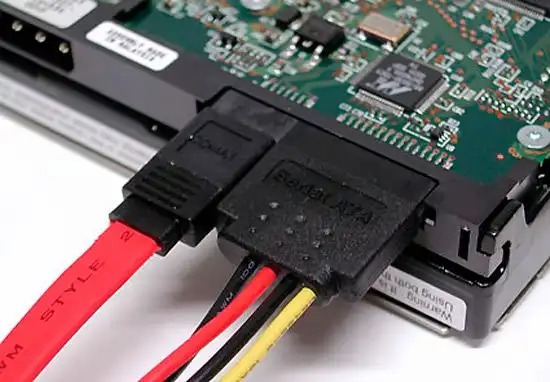
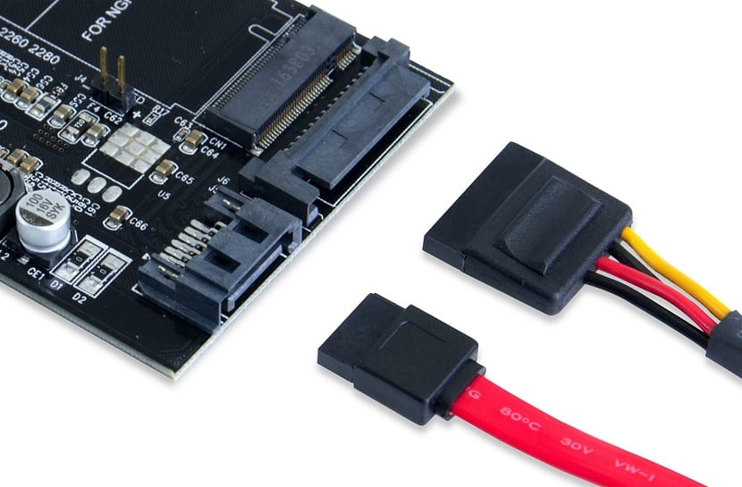

<!DOCTYPE html>
<html lang="es">

<head>
    <meta charset="UTF-8">
    <meta http-equiv="X-UA-Compatible" content="IE=edge">
    <meta name="viewport" content="width=device-width, user-scalable=no">
    <link rel="stylesheet" href="stylecontent.css">
    <link rel="icon" type="favicon/x-icon" href="assets/robot.png">
    <title>Módulos Von Neumann</title>
</head>

<body>
    <section id="primer" class="primero">
        <article class="heroe-image" style="--heroe-attachment: scroll;">
            <aside class="heroe-image-opacity" style="--heroe-opacity-color: var(--first-color);">
                <div class="container">
                    <h2>Manejo de la memoria</h2>
                    <div class="carousel" style="--carousel-bg-color: var(--second-color);">
                        <input type="radio" name="slides" id="slide-1" checked>
                        <input type="radio" name="slides" id="slide-2">
                        <input type="radio" name="slides" id="slide-3">
                        <input type="radio" name="slides" id="slide-4">
                        <ul class="slides">
                            <li class="slide">
                                
                                <blockquote>Se encarga de verificar si hay espacio en la memoria para enviar el proceso,
                                    si hay espacio se envia a la memoria RAM y si no se envia al Disco Duro.
                                </blockquote>
                                <h3 class="text-first-color">Unidad de Gestión de Memoria (MMU)</h3>
                            </li>
                            <li class="slide">
                                
                                <blockquote>Cada vez que sea necesario, el sistema hace uso del <strong>Swap</strong>
                                    para hacer un intercambio, pasando del proceso del <strong>Disco a la Memoria
                                        Ram</strong></blockquote>
                            </li>
                            <li class="slide">
                                
                            </li>
                        </ul>
                        <aside class="slides-nav">
                            <label for="slide-1" id="dot-1"></label>
                            <label for="slide-2" id="dot-2"></label>
                            <label for="slide-3" id="dot-3"></label>
                        </aside>
                    </div>
                </div>
            </aside>
        </article>
    </section>
</body>

</html>